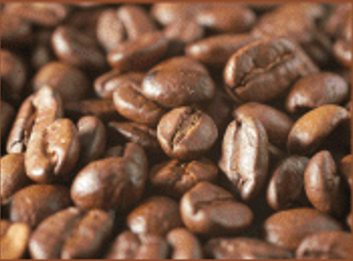
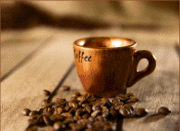
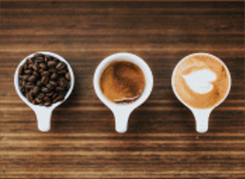
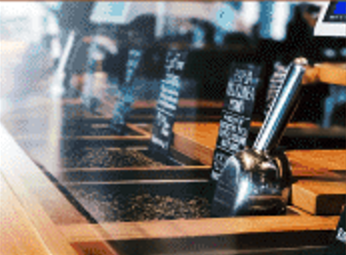
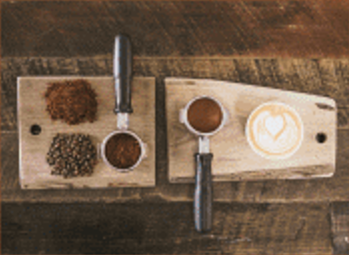
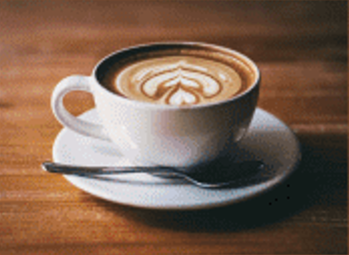

咖啡历史
咖啡树原产于非洲埃塞俄比亚西南剖部的高原地区,当地土著人经常把收啡树的果实磨碎。再把它与动物脂防廖在一起揉捏。做成许多球状的丸子，将这些啡丸子当成珍贵的食物。专供那些即将出征的战士享用。
国内发展
咖啡自1898年引进中国海南省文吕市迈号镇种植以来，经过了一百多年，咖啡进入高速发展时期。进入2021年3月下旬。在咖啡种植面积和产量占中国99%以上的云南省,咖啡采收接近尾声。
咖啡历史
咖啡树原产于非洲埃塞俄比亚西南剖部的高原地区,当地土著人经常把收啡树的果实磨碎。再把它与动物脂防廖在一起揉捏。做成许多球状的丸子，将这些啡丸子当成珍贵的食物。专供那些即将出征的战士享用。
选购指南
不论是味一种收排，新鲜度都是影响品质的重要因素。选购时，抓一两颗红啡豆在嘴中嚼一下，要是清脆有声，表示咖啡豆未受潮,而唇齿留香的咖啡豆才是上品。但最好还是用手捏捏,不要买空壳的收啡。
制作方式
德国人发明的冲赢方法。简单地说，就是把咖啡磨粉后，放在一个漏斗里然后再加层站纸，上面浇上热水，首先注入一次热水闷蒸20秒，然后再以绕圈的方式注入热水，由于地球引力作用，咖啡就从底下流出来
引用指南
医生提醒，切忌在空腹时思收啡,因为有啡会刺激胃酸分泌。尤其是有胃溃疡的人西应谨慎。收啡作为一种饮品，饮用时，要根据个体情况适可而止。总的来说在营养学中还是强调均衡饮食而少用辛辣刺激食物.